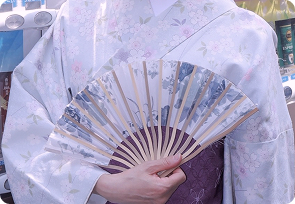
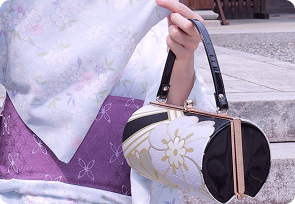
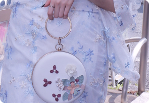
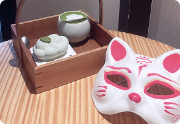
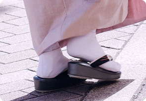
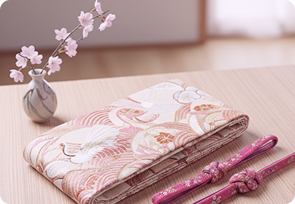

配飾租賃一覽

日式扇子
定格古典風韻的必備配件 ，我們的扇具採用傳統竹骨與精美和紙/布面製作，手感輕盈且展開優雅
NT 200

經典刺繡手提包
採用硬挺的圓筒或方正設計，實用性高，更能為您的振袖或正式和服造型增添一份沉穩的貴氣與品味
NT 250

浪漫造型手拿包
採用圓形、半月形設計，配有精巧的金屬圓環或鏈帶。視覺效果輕盈柔和，增添甜美與時尚感
NT 350

主題面具
瞬間為您的和服寫真注入神秘、復古或妖異的主題氛圍，創造出強烈的視覺衝擊和故事感
NT 150

足袋與木屐
採用柔軟的底墊和精緻的織帶，提供更舒適的行走體驗，讓您在京都石板路上走得優雅自在
NT 200

帶揚與帶締
我們的升級選項提供華麗的刺繡帶締和具備特殊圖案 或材質的帶揚，讓原本單調的腰部瞬間成為焦點
NT 350
攝影方案加購
輕快捕捉
【快速入門，輕鬆擁有專業回憶】
適合首次體驗者或時間寶貴的您 高效捕捉您最自然、最甜美的笑容
“30 分鐘拍攝，交付 10 張精修照片”
NT 3200
經典寫真
【我們的推薦！經典和風故事集】
最受歡迎的黃金方案！ 擁有充足時間走訪 2-3 處特色場景
“60 分鐘拍攝，交付 25 張精修照片”
NT 4800
奢華全日
【深度體驗，留下大師級作品】
涵蓋多個地點移動 並捕捉不同光線下的氛圍
“90 分鐘拍攝，交付 40 張精修照片”
NT 5200